13. Observability and SLOs#
What the platform measures, what it promises, and how a person gets from an alert to the cause. The decision is
ADR 0013; the implementation, how to run it
and how to check it are in deploy/observability; what to do when an alert fires is
in 15 Runbooks.
13.1 Signals and pipeline#

| Signal | Produced by | Conventions |
|---|---|---|
| Traces | Java: Micrometer Tracing bridged to OpenTelemetry; storefront: OTel Node SDK with HTTP and undici instrumentation | W3C traceparent everywhere, including Kafka record headers and the outbox row; health checks, metrics scrapes and the relay's polling are not traced; query strings are dropped from span names and URLs |
| Metrics | Micrometer at /actuator/prometheus; /metrics in Go and Python; Strimzi's Kafka exporter |
Prometheus naming; histograms for http.server.requests (5 ms – 5 s); the gateway's per-route histogram with buckets at each SLO threshold |
| Logs | stdout, one JSON object per line | Java: ECS (LOGGING_STRUCTURED_FORMAT_CONSOLE=ecs) with traceId and spanId; storefront: pino with the same fields; labels in Loki are only service and level, the trace id is structured metadata |
13.2 One trace from click to consumers#
The outbox writer stores the request's traceparent with each event; the relay sends the event inside that context, so the
asynchronous half of a request belongs to the same trace. Verified on the local stack with a real checkout:
api-gateway http post /api/v1/orders request.id = 4525fb06-…
order-service http post /api/v1/orders
cart-service http get /internal/carts/{customerId}/checkout-snapshot
inventory-service http post /internal/reservations
payment-service http post /internal/payments/authorize
order-service order.events send (outbox relay, after commit)
cart-service order.events process (cart cleared)
inventory-service order.events processProblem responses return the request id as traceId. Support can paste it into Tempo
({ span.request.id = "<id>" }) and land on the trace, then jump to that trace's log lines in Loki.
13.3 SLIs and SLOs#
Measured at the API gateway per route, so failures between the gateway and a service count against the service. Objectives are over 30 days and come from SPEC §2.2.
| Journey | SLI | Objective | Error budget (30 days) |
|---|---|---|---|
| Browse (catalog, search, reviews, recommendations, order reads) | non-5xx responses / all | 99.95 % | 21.6 min |
| Cart | non-5xx / all on cart routes | 99.95 % | 21.6 min |
| Checkout | non-5xx / all on POST /orders |
99.9 % | 43.2 min |
| Product page latency | GET catalog under 150 ms | 99 % | 1 % of requests |
| Search latency | GET search under 300 ms | 99 % | 1 % |
| Add-to-cart latency | PUT/POST cart items under 100 ms | 99 % | 1 % |
| Checkout latency | POST /orders under 1.5 s |
99 % | 1 % |
A declined payment or an out-of-stock answer is a correct 4xx/409 outcome, not an error. Checkout outcomes are counted
separately (checkout_outcomes_total{outcome}) so the business can see declines without them burning the budget.
The table lives in one place, deploy/observability/generate.py, which writes the recording rules, the alerts, the
Kubernetes PrometheusRules and the SLO dashboard; CI fails when the generated files are stale.
13.4 Alerts#
Burn-rate alerts follow the SRE workbook's multi-window pattern: both a long and a short window must burn, so an alert starts fast and stops soon after the problem does.
| Alert | Windows | Burn rate | Budget gone in | Severity |
|---|---|---|---|---|
ErrorBudgetBurnFast |
1 h and 5 min | 14.4 | ~2 days | page |
ErrorBudgetBurnFast |
6 h and 30 min | 6 | 5 days | page |
ErrorBudgetBurnSlow |
1 day and 2 h | 3 | 10 days | ticket |
ErrorBudgetBurnSlow |
3 days and 6 h | 1 | 30 days | ticket |
Cause-based alerts cover what SLOs see late or not at all:
| Alert | Fires when | Severity |
|---|---|---|
OutboxBacklogStale |
the oldest unpublished event of a service is older than 30 s | page |
TopicGrowingFasterThanItsEvents |
a topic grows more than ten times faster than its outbox publishes (a producer re-sending) | page |
ServiceDown |
Prometheus cannot scrape a service for 2 min | page |
DeadLetterQueueNotEmpty |
any <topic>.dlq has messages |
ticket |
ConsumerLagGrowing |
a consumer group is more than 1,000 events behind and still falling behind, for 10 min | ticket |
PaymentOutcomeUnknown |
more than 5 checkouts ended in a payment timeout within 15 min | ticket |
PaymentDeclineRateHigh |
more than 30 % of checkouts declined for 15 min | ticket |
RateLimiterDegraded |
the gateway cannot reach Redis and limits per instance | ticket |
Every alert has a runbook section (15 and deploy/observability/RUNBOOK.md) and unit tests run by
promtool in CI.
13.5 Dashboards#
| Dashboard | Shows |
|---|---|
| Services: rate, errors, duration | RED per service and route, p50/p95/p99 from histograms |
| SLOs and error budgets | each SLO's 30-day compliance, budget left, burn rates per window |
| Checkout, events and Kafka | checkout outcomes, outbox backlog and age, events published per type, messages produced per topic, consumer lag, DLQ depth |
| Analytics (ClickHouse) | business views: orders, revenue, top products (analytics) |
13.6 Sampling, retention and cost#
| Environment | Traces | Logs | Metrics |
|---|---|---|---|
| Local (compose) | 100 %, 24 h | 72 h | 15 d |
| Kubernetes | tail sampling: every error, every trace over 1 s, 10 % of the rest | per environment | per environment |
Tail sampling needs all spans of a trace on one collector: an Alloy DaemonSet receives spans and routes them by trace id to
an alloy-sampler StatefulSet, which decides once the trace is complete.
13.7 Known gaps#
- notification-service and recommendation-service export metrics but no traces; their consumers ignore the incoming
traceparent. - The edge logs the request id but starts no trace.
- Exemplars (a link from a latency bucket to an example trace) are stored by Prometheus but not yet attached by services.
- Locally, the core stack plus this profile needs about 5 GB of Docker memory under load.